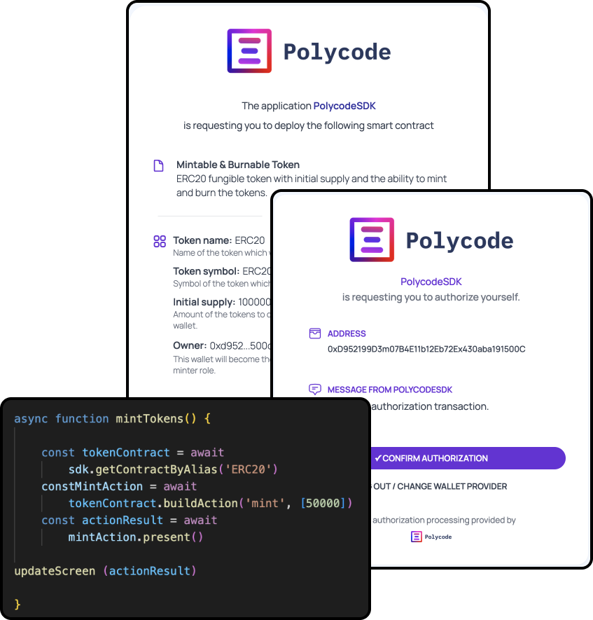
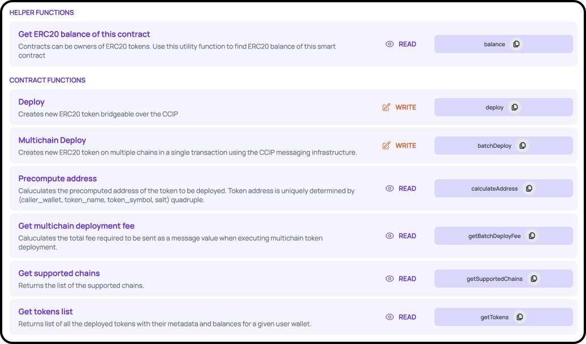

Revolutionize
Your Web3 Development with Polycode.
Experience effortless transaction processing, robust security measures, and insightful analytics, all through a single, intuitive line of code.
Try for Free
Read the Docs
Simplified Blockchain Integration
Making Web3 accessible to all.
Our modular SDK caters to both novice enthusiasts and seasoned developers, offering flexibility and ease without compromising on power or security.
Manage smart contracts, streamline frontends, and process transactions with unparalleled ease and safety.
Our modular SDK caters to both novice enthusiasts and seasoned developers, offering flexibility and ease without compromising on power or security.
Manage smart contracts, streamline frontends, and process transactions with unparalleled ease and safety.
$ npm install polycode-sdk
Versatile SDK for Every Developer.
Whether a novice in Web3 or an experienced pro, the Polycode SDK flexibly meets your unique requirements.
$ npm install polycode-sdk

Easily Manage your Smart Contracts.
The Polycode development kit dashboard simplifies the management of smart contracts significantly.
Seamlessly integrate all the smart contracts used by your application into one unified dashboard.
Manage multi-chain deployments and smart contract versions with ease, and benefit from an automatically generated admin panel for each connected smart contract.
Seamlessly integrate all the smart contracts used by your application into one unified dashboard.
Manage multi-chain deployments and smart contract versions with ease, and benefit from an automatically generated admin panel for each connected smart contract.


Streamlined Blockchain Development
Deploy Faster
Test PoC
Easily implement Web3 functionalities
Compatible with existing web2 products
Explore new use cases
Extremely low overhead
Polycode streamlines every facet of creating blockchain apps, making managing smart contracts, frontends, and transactions simpler and more secure.
Get started with Polycode today
Integration takes less than a minute! Start building your Web3 frontends today.
Start Free Trial
Book a call